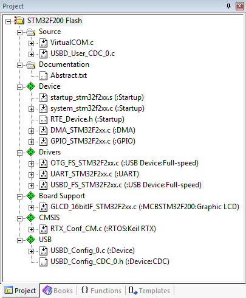

The Communication Device Class (CDC) is used for implementing virtual communication ports. This example demonstrates a bridge between a Virtual COM Port on the USB Host Computer and an UART port on the evaluation board.
The following picture shows an exemplary connection of the development board and the USB Host Computer.
The Abstract.txt file contained in the Documentation group of the Project window gives you more information on the general setup and the available I/O on the development board.
Build the "USB Device Virtual COM" Project
Open the example project in MDK. The µVision Project window should display a similar project structure:

Typical Project Structure of an USB VCOM Example
Source Files
- VirtualCOM.c contains the main C function that initializes the board hardware and the USB Device Component. Furthermore, it contains the code that exchanges the data internally between the USB and the UART port.
- The USBD_User_CDC_0.c is an adapted code template that implements all necessary file access functions. Refer to CDC: Communication Device Class (ACM) for details about these template functions.
If you are using RTOS other than CMSIS-RTOS2 RTX5 for your project please make sure to satisfy USB Device Resource Requirements.
You may now build and download the example project to the evaluation board using the µVision commands:
- Project --> Build target (F7)
- Flash --> Download (F8)
After these steps, the project should start executing on your evaluation kit. In case of errors, refer to the Evaluation Board User's Guide for configuration information.
Using the "USB Device Virtual COM" Project
Hardware Setup
The setup of the Evaluation Board hardware is described in the Abstract.txt file.
- Verify all jumper settings on the target hardware.
- Connect the UART on the development board to your PC (you might need an USB to serial RS232 adapter). Use an USB cable to connect your development board to the Host PC and power up your board.
- The Welcome to the Found New Hardware Wizard appears. Installation of the driver is described in detail in the Abstract.txt file.
PC Software
The USB Device Virtual COM example can be tested on a Windows PC using a terminal emulation program. Since Hyperterminal in not part of Windows any more, please download an appropriate program for this purpose (such as PuTTY for example). Open the two COM ports "COMx" and "COMy". Any data from "COMx" will be echoed on "COMy" and visa versa:
About Host PC driver for Microsoft Windows
The example folder contains two files relevant for driver installation on the Microsoft Windows:
- Driver setup information file (xxx-vcom.inf) which is used to create a digitally signed driver catalog file (xxx-vcom.cat)
- Digitally signed driver catalog file (xxx-vcom.cat)
The driver files are provided as an example, the driver setup information file should be adapted and digitally signed driver catalog file should be created from adapted driver setup information file.
Driver setup information file should be adapted in the following way:
- c251 in Vendor ID VID_c251 entries should be changed to the vendor ID number assigned to your company by the USB organization (c251 Vendor ID is reserved for Keil Software and should not be used)
- xxxx in Product ID PID_xxxx entries should be changed to the product ID as assigned by your company
- in [DeviceList.xxx] sections, entries not relevant for the device, should be removed or added as described below:
- if device is pure CDC class device (not composite) then all entries ending with &MI_xx should be removed
- if device is a composite device with one or more CDC class instances then entries not ending with &MI_xx should be removed and entries ending with &MI_xx should exist for each CDC class instance (example driver contains entries ending with &MI_00 and &MI_02 which are used for composite device containing two CDC class instances and each instance uses 2 interfaces where MI_00 describes first CDC instance and MI_02 entry describes second CDC instance)
- [Strings] section should be changed as desired
- Note
- Vendor ID and Product ID are configured in the USBD_Config_n.h configuration file of the embedded application.
-
For producing digitally signed driver catalog file please refer to Microsoft Windows documentation.